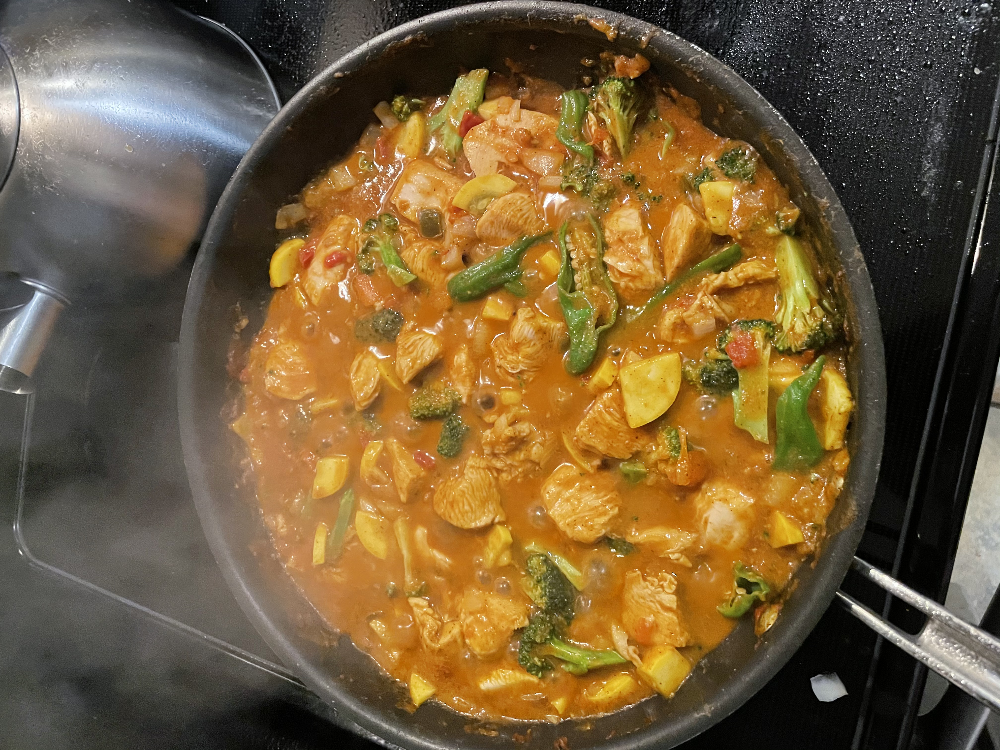

| Picture | Food | Cooking Time | Ingredients |
|---|---|---|---|
|  | Coconut Curry Chicken | 45 minutes | Onions, Chicken, Curry Sauce, Peppers, Broccoli, Yellow Squash |
 |
Buttered Lobster | 30 minutes | Potato, Lobster Tail, Green Beans, Butter |
 |
Teriyaki Glazed Salmon | 15 minutes | Atlantic Salmon, Teriyaki Sauce, White Rice, Cucumber, Tomato |